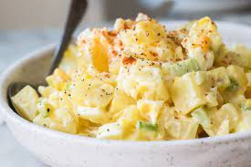

Potato Salad

Description
Ingredients
- 5 Yukon Gold Potatoes
- 3 Eggs
- 1 Stalk of Celery
- Mayonnaise
- Salt
- Pepper
- Paprika
Steps
- Wash the potatoes
- Fill a pot with water and put in potatoes
- Bring the pot with potatoes to a boil
- Once the potatoes are soft (can poke a fork through), put in the eggs and boil for 12 minutes
- Turn off the heat and drain water
- Peel the potatoes and eggs
- Mash up the potatoes and dice eggs
- Add Mayonnaise, Salt, Pepper, and Paprika to your taste
Return to All Recipes